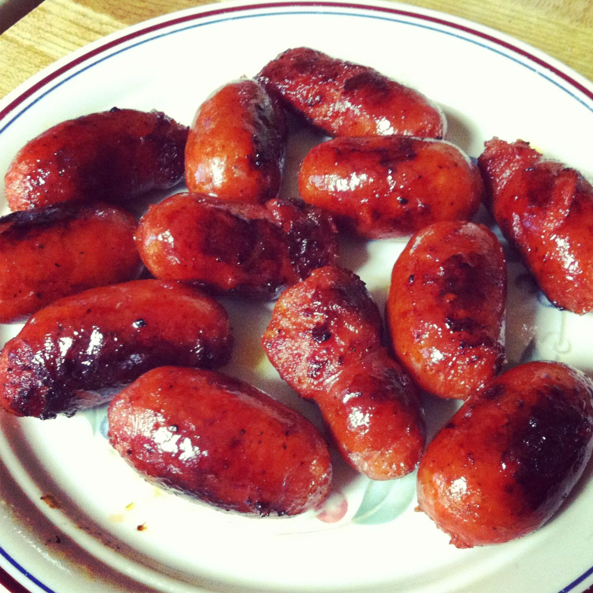

Longganisa Recipe

Ingredients:
- 1 lb ground pork (or chicken, depending on preference)
- 2 tbsp soy sauce
- 1 tbsp vinegar
- 4 cloves garlic, minced
- 1/4 cup brown sugar
- 1/2 tsp salt
- 1/4 tsp ground black pepper
- 1/4 tsp paprika (optional for color)
- 1/4 tsp chili flakes (optional for spice)
- 1 tbsp cooking oil
- Sausage casings (optional, for traditional longganisa)
Instructions:
- In a large bowl, combine ground pork, soy sauce, vinegar, garlic, brown sugar, salt, black pepper, paprika, and chili flakes. Mix until well combined.
- If using sausage casings, stuff the mixture into the casings. If not, you can form the mixture into patties or log shapes without the casings.
- Heat 1 tablespoon of oil in a pan over medium heat. Once the oil is hot, fry the longganisa until they are golden brown and cooked through, about 8-10 minutes, turning occasionally to ensure even cooking.
- Drain on paper towels to remove excess oil.
- Serve with garlic rice and eggs to make a delicious "longsilog" meal. Enjoy!
Back to Menu